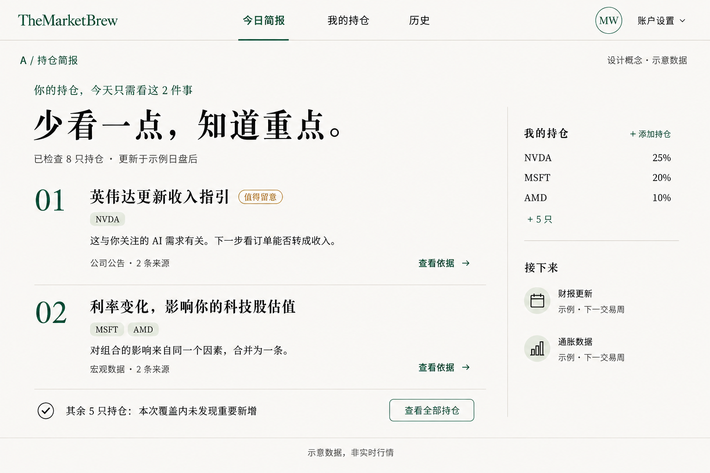

HOLDINGS FIRST / 持仓优先
让服务变轻，
让重要的信息更清楚。
用户添加持仓，Agent 筛选与他有关的新变化。把每天的信息处理收敛成一份短简报，读完即可继续生活。
推荐起点：A 持仓简报 + 持仓影响排序 + 每日一次检查。
三个界面是替代方案，先选择一个方向。
高保真设计概念 · 股票、事件和日期均为示意 · 不是已上线页面查看完整大图 ↗

A · 一封值得读完的持仓简报
具体怎么改
需要接受的取舍
其他模块，也有不同做法。
切换下面的方向，看看能力和维护负担如何变化。默认选项是建议组合，选择仅用于比较。
当前比较组合
减法要同时发生在页面与后台。
保留并贯通
持仓、短简报、事件来源、历史、邮件、反馈。登录后的主导航只有今日简报、我的持仓、历史。
合并或降级
关注与持仓统一管理；宏观、KOL、个股研究按持仓相关性进入内容，独立入口列为退出候选。
先核实依赖
按使用与已售权益确定停用顺序。保留账户、账单、退订、历史和失败记录；只删导航不会节省生成成本。
升级的重点，是会筛选，也会保持安静。
01 可信事实
同一事件处理一次，合并转载；保留来源、时间与实质更新。
02 关联持仓
说明为什么与你有关；没有提供权重或理由，就承认未知。
03 简短交付
默认展示 1–3 条重点；无重大新增可为空，关键事件不因条数上限漏掉。
04 检查结果
无重要新增、覆盖不全、处理失败分开；用漏报、误报、复用与成本验证。
代码核对：专属日报仍使用 gemini-3-flash-preview；研究助手和通用日报已使用 gemini-3.5-flash。先升级核心链路的模型、prompt、语义缓存与质量验证。